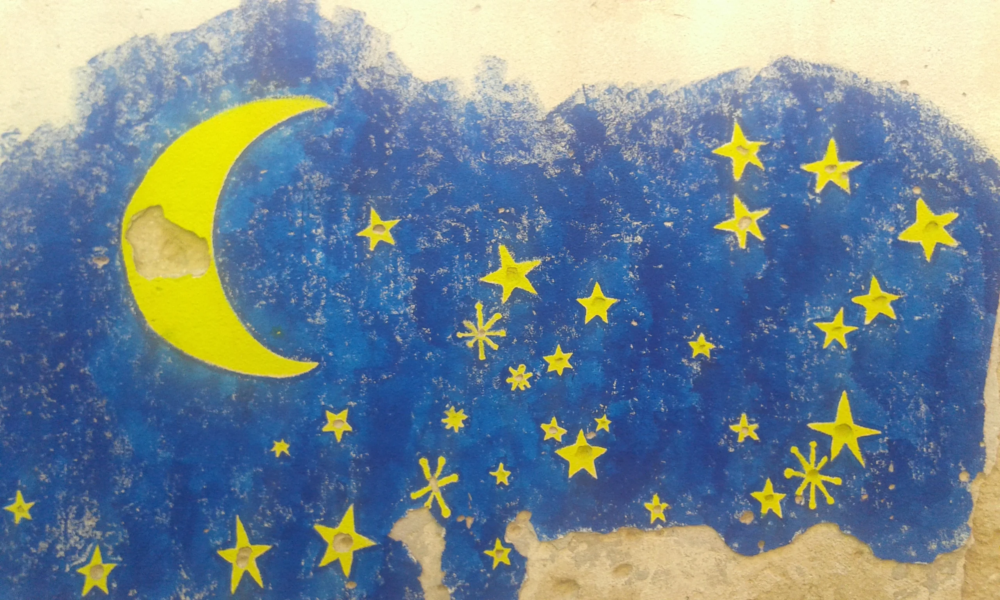

My second journey in the Balkan region started in Pogdorica, Montenegro, according to many one of the ugliest city in the world. I stayed there for a few days and in fact I was not much impressed by the city, although the expression "ugliest city in the world" sounds maybe a little too harsh. As usual I decided to start this trip close to where I finished last, 8 years before, when I went driving through Slovenia and Croatia. After having spent sometime in Podgorica which included a night at the stadium with an american fellow followed by a heavy Rakia drinking session that I obviously ended up regretting the day after, I decided to move down the coast visiting Budva and Kotor. Kotor was particularly nice, the old town looks very cozy and in order to get back to a decent shape after the previous hangover, I decided to hike up to the old fortress and enjoy the beautiful view of the fiords.

After Montenegro I moved to Bosnia and Mostar was the first city on my bus journey. Bosnia completely differs from the other balkan countries, from both geographical, political and religious prospective. The country has been massacred during the Balkan wars and nowadays it is still struggling to walk on its own legs. The presidency of the country rotates every 8 months between 3 members (a Bosniak, a Serb and a Croat) and that probably does not help to stabilise things in the area. Mostar bridge (Stari Most) is the most meaningful monument I have seen in the whole trip, together with all the white gravestone cemeteries of Sarajevo if those can be called monuments. The bridge is an Ottoman bridge that connect the two parts of the city, firstly destroyed during the Croat-Bosniak war and subsequently reconstructed as a symbol of reconciliation and friendship between the different inhabitants of the city, Bosnians, Croats, Serbs, Muslims, Jews and Orthodox Christians.
Last but not least came Serbia. The only stops I made were Belgrad and Nis. Belgrad is one of oldest cities in the world and also a city with an hidden potential, a place that could possibly become the next big thing in the european surroundings always considering eventual political changements. The vibe is somehow similar to Berlin, the city where I currently live. The urbanisation is very strong but at the same time leaves space for a relevant number of abandoned buildings that could be used for cultural activities of various kind. Particularly enjoyable is also the view from the fortress on the two rivers Sava and Danube. The fortress built in 3BC from the Celts and rebuilted by the romans around 535 was the very nest of the city and most of its population back in the days used to live inside those walls.